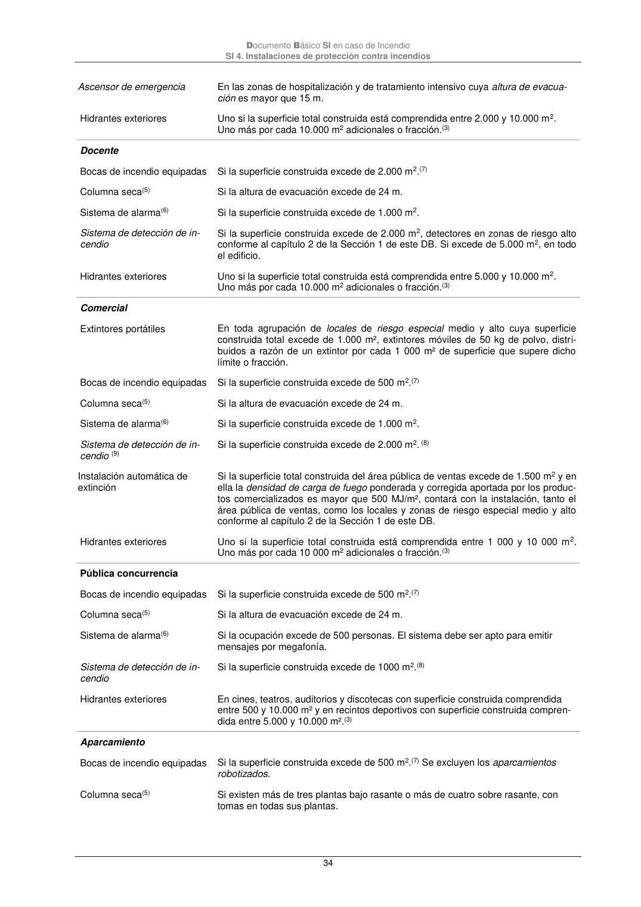

DB-SI Seguridad en caso de incendio · edición 2025-03-04 · capa oficial
Documento DB-SI-oficial · SHA-256 del PDF 0a2e78cd62471d9cc5cfe2efbc6aa39fdbad73c124aea7b039f9de96c141e105
Página física 34 de 92.
Copia fiel del PDF fuente · Fuente oficial
Ficha de la disposición en la fuente oficial
Formato: Texto de la página (Markdown)
Documento Básico SI en caso de Incendio SI 4. Instalaciones de protección contra incendios 34 Ascensor de emergencia En las zonas de hospitalización y de tratamiento intensivo cuya altura de evacua- ción es mayor que 15 m. Hidrantes exteriores Uno si la superficie total construida está comprendida entre 2.000 y 10.000 m2. Uno más por cada 10.000 m2 adicionales o fracción.(3) Docente Bocas de incendio equipadas Si la superficie construida excede de 2.000 m2.(7) Columna seca(5) Si la altura de evacuación excede de 24 m. Sistema de alarma(6) Si la superficie construida excede de 1.000 m2. Sistema de detección de in- cendio Si la superficie construida excede de 2.000 m2, detectores en zonas de riesgo alto conforme al capítulo 2 de la Sección 1 de este DB. Si excede de 5.000 m2, en todo el edificio. Hidrantes exteriores Uno si la superficie total construida está comprendida entre 5.000 y 10.000 m2. Uno más por cada 10.000 m2 adicionales o fracción.(3) Comercial Extintores portátiles En toda agrupación de locales de riesgo especial medio y alto cuya superficie construida total excede de 1.000 m², extintores móviles de 50 kg de polvo, distri- buidos a razón de un extintor por cada 1 000 m² de superficie que supere dicho límite o fracción. Bocas de incendio equipadas Si la superficie construida excede de 500 m2.(7) Columna seca(5) Si la altura de evacuación excede de 24 m. Sistema de alarma(6) Si la superficie construida excede de 1.000 m2. Sistema de detección de in- cendio (9) Si la superficie construida excede de 2.000 m2. (8) Instalación automática de extinción Si la superficie total construida del área pública de ventas excede de 1.500 m2 y en ella la densidad de carga de fuego ponderada y corregida aportada por los produc- tos comercializados es mayor que 500 MJ/m², contará con la instalación, tanto el área pública de ventas, como los locales y zonas de riesgo especial medio y alto conforme al capítulo 2 de la Sección 1 de este DB. Hidrantes exteriores Uno si la superficie total construida está comprendida entre 1 000 y 10 000 m2. Uno más por cada 10 000 m2 adicionales o fracción.(3) Pública concurrencia Bocas de incendio equipadas Si la superficie construida excede de 500 m2.(7) Columna seca(5) Si la altura de evacuación excede de 24 m. Sistema de alarma(6) Si la ocupación excede de 500 personas. El sistema debe ser apto para emitir mensajes por megafonía. Sistema de detección de in- cendio Si la superficie construida excede de 1000 m2.(8) Hidrantes exteriores En cines, teatros, auditorios y discotecas con superficie construida comprendida entre 500 y 10.000 m² y en recintos deportivos con superficie construida compren- dida entre 5.000 y 10.000 m².(3) Aparcamiento Bocas de incendio equipadas Si la superficie construida excede de 500 m2.(7) Se excluyen los aparcamientos robotizados. Columna seca(5) Si existen más de tres plantas bajo rasante o más de cuatro sobre rasante, con tomas en todas sus plantas.
